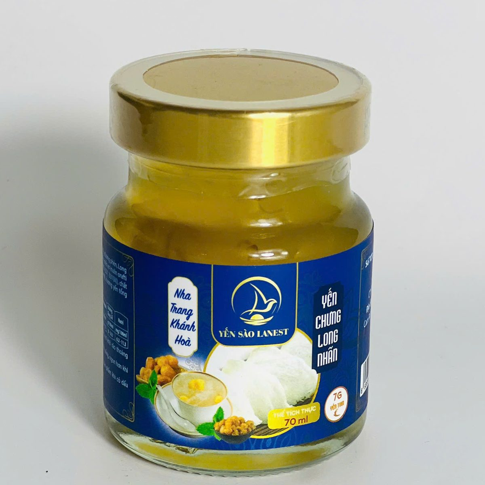
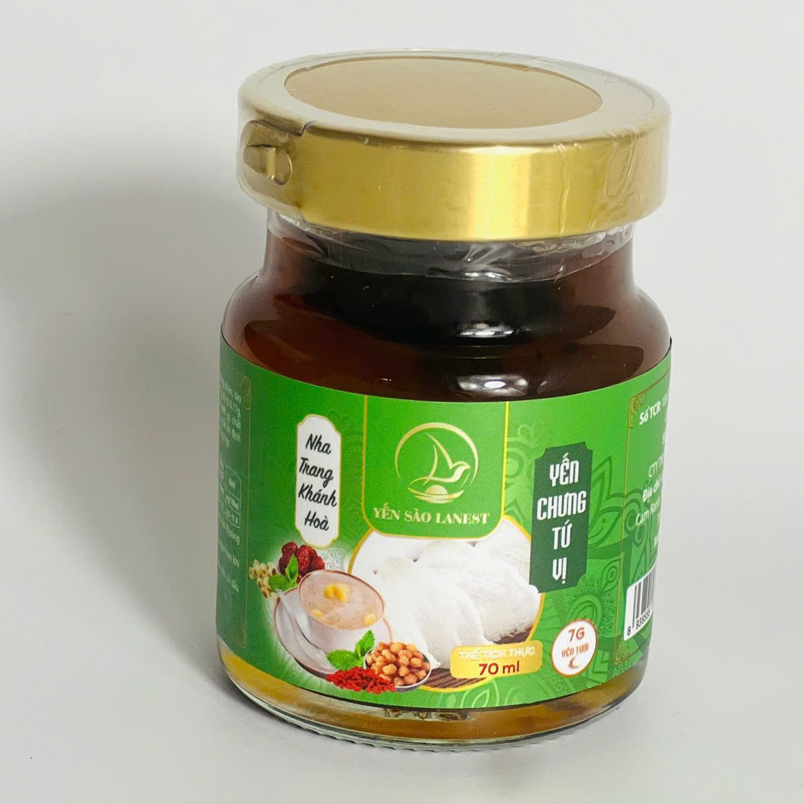

Yến Chưng Long Nhãn: Trong Hũ Có Gì, Hợp Với Ai Và Cách Dùng
Yến Sào Lanest · Đăng ngày 06/11/2026

Yến chưng long nhãn là vị ngọt đậm hơn hẳn hạt sen hay đường phèn, nhờ những miếng nhãn nhục sấy dẻo chưng cùng sợi yến. Ai thích yến có "cái để nhai", có vị trái cây thì thường chọn hũ này. Bài dưới đây dựa trên danh mục và tài liệu sản phẩm của Lanest: trong hũ có gì, hỗ trợ gì, hợp với ai, dùng lúc nào và cách tự chưng yến long nhãn ở nhà.
Hũ yến chưng long nhãn 70ml, nhãn xanh dương, nước yến ngả vàng nhẹ
1. Long nhãn là gì, vì sao chưng cùng yến?
Long nhãn còn gọi là nhãn nhục: cùi nhãn đã sấy khô, màu nâu vàng, vị ngọt và thơm. Tài liệu giới thiệu sản phẩm của Lanest tả yến chưng long nhãn là sự kết hợp giữa tổ yến và long nhãn thơm ngọt, cho hương vị thanh mát, dễ chịu.
Long nhãn có sẵn vị ngọt nên khi chưng cùng yến, nước yến đậm đà hơn, màu cũng ngả vàng như trong ảnh. Đây cũng là một trong bốn nguyên liệu của vị tứ vị, cùng táo đỏ, hạt sen và kỷ tử.
2. Trong một hũ yến chưng long nhãn Lanest có gì?
Yến chưng long nhãn thuộc dòng yến hũ 7g yến tươi, hũ thủy tinh 70ml. Theo danh mục sản phẩm của Lanest, mỗi hũ có long nhãn 2,9g cùng 7g yến tươi. So với hũ tứ vị (long nhãn 1,5g, chia chỗ cho táo đỏ, hạt sen, kỷ tử), hũ long nhãn có lượng nhãn nhục nhiều gần gấp đôi, nên vị nhãn rõ hơn.
Các thành phần còn lại ghi đầy đủ trên nhãn sau của hũ. Dòng 7g có phụ gia ghi rõ trên nhãn, nên Lanest không gọi dòng này là "100% yến". Xem cách đọc nhãn trong bài cách đọc nhãn yến hũ chưng sẵn.
3. Yến chưng long nhãn hỗ trợ gì?
Bản mô tả từng vị của Lanest ghi yến chưng long nhãn:
- Hỗ trợ bồi bổ cơ thể, cung cấp năng lượng.
- Hỗ trợ thư giãn tinh thần, cải thiện giấc ngủ.
- Hỗ trợ phục hồi thể trạng, giảm mệt mỏi.
- Hỗ trợ duy trì làn da khỏe mạnh.
Tất cả ở mức "hỗ trợ". Yến chưng long nhãn là thực phẩm, không phải là thuốc và không có tác dụng thay thế thuốc chữa bệnh. Long nhãn vốn ngọt, nên người cần kiểm soát đường huyết, người đang điều trị bệnh hoặc đang mang thai nên hỏi bác sĩ trước khi dùng thường xuyên.

Hũ yến chưng tứ vị, nơi long nhãn đi cùng táo đỏ, hạt sen và kỷ tử
4. Yến chưng long nhãn hợp với ai?
Tài liệu sản phẩm gợi ý vị long nhãn cho người suy nhược, phụ nữ và người làm việc căng thẳng. Cụ thể hơn:
- Người hay mệt sau ngày dài, muốn một hũ yến có vị ngọt dễ chịu thay cho đồ ngọt khác.
- Chị em thích yến có vị trái cây, không thích vị quá nhạt. Mẹ sau sinh muốn dùng yến thì đọc thêm bài yến sào cho phụ nữ sau sinh.
- Dân văn phòng muốn đổi vị trong tuần, xen long nhãn với hạt sen, saffron hoặc đông trùng hạ thảo.
Ai thích vị thanh, ít ngọt hơn có thể chọn yến chưng hạt sen; người cần hạn chế đường nên chọn vị đường ăn kiêng. Bảng 14 vị có trong bài 14 vị yến chưng, chọn vị nào.
5. Dùng yến hũ long nhãn lúc nào, bao nhiêu?
- Sáng sớm hoặc buổi tối trước khi ngủ khoảng một tiếng, lúc bụng còn nhẹ. Không uống ngay sau bữa chính.
- Mở nắp là dùng được, hoặc chưng cách thủy nếu thích uống ấm. Không đun sôi trực tiếp.
- Dùng đều, vừa phải. Người trưởng thành khoảng 2–3 lần mỗi tuần, nhiều nhất 3–5 lần. Với vị ngọt như long nhãn, càng không nên uống dồn nhiều hũ một lúc.
- Đã mở nắp thì cất lạnh và dùng sớm.
6. Muốn tự chưng yến long nhãn tại nhà
Với tổ yến tinh chế có sẵn, anh chị làm theo các bước chưng cơ bản Lanest đang hướng dẫn, thêm long nhãn ở bước cho vào thố:
- Ngâm tổ yến trong nước lạnh 30–40 phút cho nở đều, mềm. Không ngâm nước ấm hay nóng.
- Cho yến đã ngâm vào thố sứ hoặc hũ thủy tinh chịu nhiệt, thêm long nhãn, đổ nước vừa ngập, đậy nắp.
- Chưng cách thủy lửa nhỏ 20–30 phút. Yến chín khi nước có bọt tăm nhẹ và sợi yến nổi lên. Không chưng quá lâu kẻo yến nát.
- Nếm trước rồi mới cho đường phèn, khoảng 5 phút trước khi tắt bếp. Long nhãn đã ngọt, nên bớt đường so với chưng yến đường phèn.
Tài liệu của Lanest chưa có định lượng long nhãn riêng cho yến tự chưng; mốc tham khảo là hũ 70ml của Lanest có 2,9g long nhãn. Mỗi lần chỉ chưng vừa đủ ăn trong 1–2 ngày, cất ngăn mát. Các bước chi tiết có ở bài hướng dẫn chưng yến đúng cách.
Câu hỏi thường gặp
Long nhãn và nhãn nhục có phải một không?
Là một. Nhãn nhục là cùi nhãn đã sấy khô, thường được gọi là long nhãn khi dùng chưng yến hay nấu chè.
Một hũ yến chưng long nhãn Lanest có bao nhiêu long nhãn?
Mỗi hũ 70ml có 7g yến tươi và 2,9g long nhãn, theo danh mục sản phẩm của Lanest.
Nên chọn hũ long nhãn hay hũ tứ vị?
Thích vị nhãn rõ thì chọn long nhãn. Muốn vị hòa nhiều nguyên liệu (táo đỏ, long nhãn, hạt sen, kỷ tử) thì chọn tứ vị.